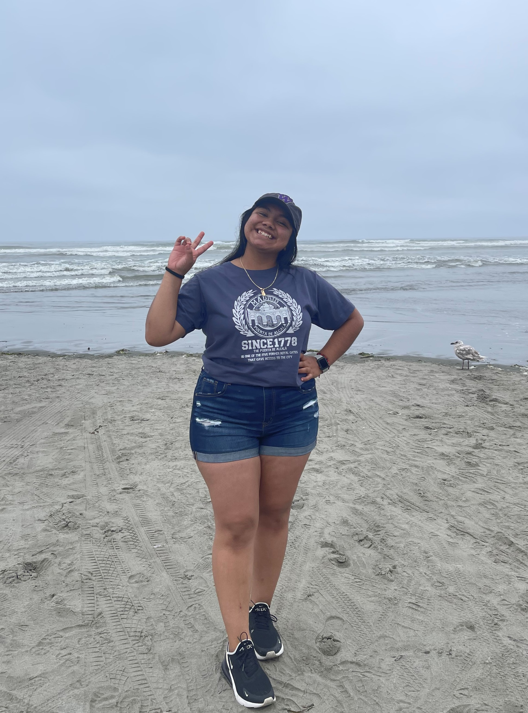

About Me
Hello! My name is Michelle Delgado-Alvarez and I am an incoming sophomore at the University of Washington studying Computer Science. I am very excited, but also very nervous to start off this new year! I am someone who enjoys spending time with family and friends, as well as exploring new places. So far, I've been to Los Angeles, Baltimore, D.C, Mexico City, and Madrid. But, I hope after I graduate college I see new places in Europe and Asia! Lastly, I am someone who likes to listen to music, spend hours in Tiktok, or watch tv shows(American, Telenovelas, Kdramas, Turkish dramas, anything drama/comedy really) while I chill in my bed!

Advice to Students
A piece of adivce I would give to students is to use campus resources, specifically tutoring centers. It can be really challenging having to face certain assignments by yourself, but tutoring places makes it easier for students to ask for help as well as a great place to meet new people. I would also say, make friends in your classes. They will be a good resource, as well as support as you go through challenging classes. Lastly, I would say to enjoy your first year and take care of your mental health (this will be crucial!)